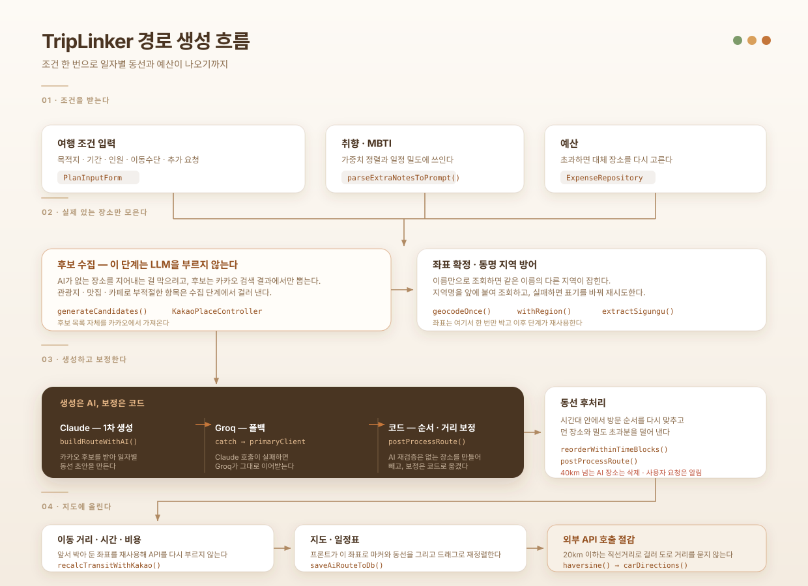
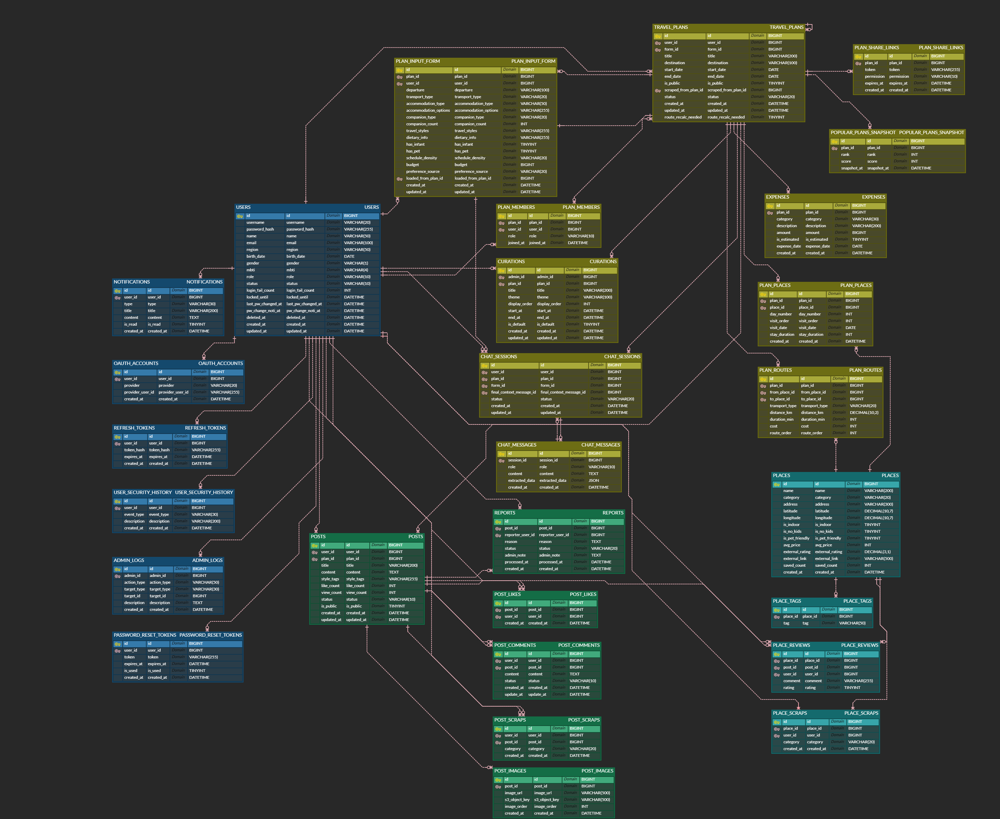

개요
여행지·날짜·인원·예산을 입력하면 AI가 취향을 분석해 일자별 동선과 예산이 담긴 일정을 만들어 주는 서비스입니다.
제가 맡은 것은 백엔드 전반입니다. 인증·보안, AI 일정 생성, 경로·동선, 챗봇, 기상 연동을 구현했습니다.
요구사항 정의서·ERD·WBS를 작성하고 테스트 케이스 169건을 문서로 정리한 뒤 AWS EC2·RDS 에 배포했습니다.
프론트엔드 화면은 Claude·Gemini·Figma로 시안을 만들어 붙이고 API 연동을 직접 설계 및 구현·개발 했습니다.
분석
기준은 하나였습니다. 입력은 최소로, 결과는 바로 쓸 수 있게.
요구사항 정의서 · 기능 리스트 · API 정의서 · 테이블/클래스 정의서 · WBS를 문서로 만들었습니다.
팀원과 인터페이스 조율
설계
도메인별로 패키지를 분리하고 서비스는 인터페이스와 구현체로 나눈 계층형 구조로 설계했습니다.
AI 일정 생성에는 Spring AI
ChatClient 세 개를 배치했습니다.
존재하지 않는 장소를 생성하지 않는 것을 첫 번째 기준으로 삼았습니다.
데이터 구조는 물리적 모델링(ERD)으로
확정했습니다.
도메인 계층형 구조 12개
user · auth · plan · planshare · route · place expense · weather · chat · post · admin · system 12개로 분리.
각 서비스는 인터페이스와 구현체로 결합도를 낮춤.
후보는 카카오 검색 결과만
generateCandidates()는 빈 JSON만 반환.
후보는 collectCandidatesFromKakao()가 카카오 검색으로만 수집.
모델이 이름을 지어낼 자리를 없앤 구조.
Claude 우선, 실패 시 Groq
AI 호출 지점은 5곳 — 동선 조립 · 챗봇 · 가격 추정 · 장소 교체 · 악천후 실내 교체.
동선 조립은 buildRouteWithAI()가 Claude 호출, catch에서 Groq로 전환. 챗봇만 Claude · Groq · Gemini 3단.
DB 조회 후 남은 장소만 일괄 요청
resolveDbPrice()가 PLACES.avg_price를 먼저 조회.
값이 없는 장소만 모아 estimatePricesWithAi()에 한 번에 전달. 응답 형식을 index:amount 한 줄씩으로 고정해 출력 토큰을 줄임.
수치는 카카오 API로 계산
프롬프트에서 transit의 km · 분 · 원 출력을 금지. 실제 값은 recalcTransitWithKakao()가 채운다.
별점도 "평점 정보 없음"으로만 받고 실측값으로 대체.
장소와 순서는 AI, 수치는 카카오로 책임을 분리.
JWT 이중 토큰
Access 30분 / Refresh 7일.
로그아웃 시 refresh_tokens 행 삭제로 재발급 차단.
OAuth 2.0 소셜 로그인, 로그인 5회 실패 시 계정 잠금.
액세스 토큰은 만료로만 회수 — 즉시 무효화에는 별도 블랙리스트 저장소 필요.


주요 기능
담당 파트 (정상연)
인증 · 보안
- JWT 이중 토큰(Access 30분/Refresh 7일), 로그아웃 시 리프레시 토큰 행 삭제
- OAuth 2.0 소셜 로그인, 로그인 실패 잠금
AI 여행 플래너 (plan)
- 카카오 검색만으로 후보를 모으는 수집 단계 (LLM 미사용)
- Claude 우선·Groq 폴백 경로 생성, 좌표 1회 조회 재사용
- 챗봇 태그로 수집한 취향을
parseExtraNotesToPrompt()로 생성 프롬프트에 합류 - 사용자가 직접 지목한 장소는 교체 금지 집합으로 보호
- 가격은
PLACES.avg_price우선, 미해결 건만 배치 호출로 추정
경로 · 지도 동선 (route)
- 동선 최적화·숙소 배치, 지도 렌더링 이슈 대응
- 지오코딩 지역 필터로 오인식 차단
챗봇 · 기상 (chat · weather)
- 챗봇이 대화에서 취향을 읽어
[UPDATE:코드:값]·[EXTRA:라벨:값]태그로 반환 - AI 추천은 취향으로 반영하지 않고, 사용자가 직접 말한 것만 반영하도록 프롬프트에 규칙 명시
- 히스토리를 최근 10건으로 잘라 토큰 관리
- 악천후 감지 시
replaceDayWithIndoor()가 해당 일차만 실내로 재구성, 나머지 일차는 원본 보존
관리자 · 시스템 (admin · system)
- 가입자·신고 현황 대시보드, 회원 제재, 큐레이션 CRUD
- 전역 예외 처리와 공통 설정, 신고 중복 방지·일괄 숨김 규칙
운영 · 품질
- 요구사항 정의서·ERD·WBS 작성, 테스트 케이스 169건 문서화
- 프로필 분리 후 AWS EC2·RDS 배포·운영
프론트엔드 (AI 활용)
- Thymeleaf 화면 11종 — 플래너·지도·가계부·커뮤니티·관리자 등
- Claude·Gemini·Figma로 시안과 컴포넌트를 만들고 API 연동을 직접 설계 및 구현·개발
- 챗봇 태그 파싱·자동 교체 루프 같은 화면 로직은 손으로 작성
개발과 평가
평가셋을 돌려 문제를 찾았습니다. 고친 다음 같은 평가셋을 한 번 더 돌렸습니다.
돌린 평가셋은 4벌, 250문항입니다. 경로 생성 100 · 멀티턴 50 · 쿼리 분해 50 · 세이프티 50.
모두 로컬 서버에서 받은 응답입니다.
평가 기준
정답을 코드로 확인할 수 있는 항목만 골랐습니다. 장소가 실제로 있는지는 카카오 로컬에 조회하고, 예산·거리·일수는 계산해서 맞춥니다.
축은 넷입니다 — 사실성(장소가 실재하는가), 제약 준수(예산·일수·동선), 멀티턴(앞 대화 조건이 남는가), 안전성.
장소는 카카오 검색 결과 안에서만 고릅니다. 모델이 이름을 지어낼 자리를 없앤 것입니다.
거리·시간·비용은 프롬프트에서 출력을 막고 API 값으로 다시 계산합니다.
그래서 장소가 실제로 있는지, 예산을 넘겼는지를 코드로 확인할 수 있습니다. 여행 조건 100건을 로컬 서버에 넣고 채점했습니다.
예산이 빠듯한 문항을 20건 섞어 두었다
평가셋 구성
목적지 20곳에 1박부터 3박까지를 걸고 이동수단·숙소·동행·스타일·밀도를 섞었습니다.
예산이 넉넉한 문항만 넣으면 예산 지표는 늘 통과로 나옵니다. 그래서 빠듯한 조건을 20건 넣었습니다.
문제 해결
인증, AI 일정 생성, 경로 계산을 domain/{auth, plan, route, chat, weather …} 아래에 분리해
구현했습니다.
해결에 가장 오래 걸린 다섯 건을 발견 · 원인 · 해결 순으로 정리했습니다.
지오코딩이 같은 이름의 다른 지역을 반환.
동선이 엉뚱한 좌표에 배치.
장소명만으로 조회해 지역 구분 불가.
전국에 같은 상호가 다수 존재.
geocodeOnce()에 지역 필터 추가. 질의 첫 토큰을 지역 키워드로 사용하고 address_name에 지역이 없는 결과는 버림.
LLM이 만든 일정의 방문 순서 어긋남. 확정 전 일정이 사라짐.
생성 결과를 그대로 사용. 순서 검증·보존 단계가 없음.
validateAndFixWithClaude()를 순서 검증 전용으로 연결. 그러나 검증 모델이 순서를 고치며 존재하지 않는 장소를 새로 생성. 생성 흐름에서 제외하고 순서·거리 보정을 postProcessRoute() 코드로 옮김.
주 모델 무응답 시 일정 생성 전체 중단. 단일 장애 지점.
LLM 한 곳에만 의존하는 호출 구조.
buildRouteWithAI()가 Claude 호출, catch에서 Groq로 전환. 챗봇은 Claude · Groq · Gemini 3단 구성.
장소마다 카카오 자동차 경로 API 호출. 경로 생성 지연.
근거리까지 전부 도로 거리 조회. 좌표도 계산 시마다 재조회.
하버사인 직선거리로 1차 선별, 20km 초과일 때만 carDirections() 호출.
좌표는 geocodeOnce()로 1회 조회 후 거리·시간·비용 계산에 재사용.
stripStayForDayTrip() 이 type=="stay" 제거 후 앞뒤 transit 까지 정리. 역순 순회로 인덱스 밀림 방지.URI.create() 로 인코딩 완료 문자열을 그대로 전달. 실패 시 공백 제거 → 앞 토큰 제거 순으로 재시도.stripBadPlaces() 가 해당 장소와 앞뒤 transit 을 코드로 삭제.개선 전후
고칠 때마다 같은 평가셋을 다시 돌려 전후를 나란히 뒀습니다.
개선 항목
| 바꾼 것 | 지표 | 고치기 전 | 고친 뒤 |
|---|---|---|---|
| 장소 후보 수집 | 모델이 장소명을 직접 생성하던 것을 카카오 로컬 검색 결과에서만 고르도록 |
11.4% (12/105) | 100% (59/59) |
| 출력 형식 고정 | 응답 형식을 프롬프트에 지정하고 읽을 때 앞뒤 코드 블록 표시를 떼도록 |
40% (8/20) | 100% (100/100) |
| 일정 저장 컬럼 | route_json 을 TEXT(64KB)에서MEDIUMTEXT(16MB)로 |
저장 실패 16건 | 저장 실패 0건 |
| 2차 폴백 모델 | llama-3.3-70b-versatile 에서openai/gpt-oss-120b 로 |
HTTP 404 (벤더에서 내려간 모델) | HTTP 200 |
| 지오코딩 후보 선택 | 카카오 1순위를 무조건 쓰던 것을 질의 첫 토큰이 주소에 있는 결과만 쓰도록 |
다른 지역 23.8% (15/63) | 0% (0/63) |
위 두 줄은 모델에 그냥 물어본 값과 서비스를 거친 값을 나란히 둔 것입니다.
아래 세 줄은 평가셋을 돌리다 드러난 문제입니다. 컬럼 타입과 폴백 모델은 코드만 읽어서는 안 보이고 100건을 실제로 넣어야 보입니다.
맞았는지는 전부 코드가 셉니다. 장소는 카카오 로컬 조회로, 저장 실패는 HTTP 상태로, 폴백은 단계별 호출로 봅니다.
회차별 추이
세 회차를 같은 채점기로 다시 채점한 값입니다. 돌릴 때마다 채점기가 달라서 그대로는 비교가 안 됩니다.
①→② route_json 컬럼 확대 · ②→③ 평가 도구의 만료 토큰 자동 재로그인.
①→②만 서비스 수정입니다. ②→③의 43건은 토큰 유효 30분, 실행 50분이라 빈 tripId 로 나간 것입니다.
세 회차 모두 100%인 장소 실재율·일수 일치율·동선 상한은 선이 겹쳐 그래프에서 뺐습니다.
모델 단독 비교표
| 지표 | TripLinker | 모델 단독 | 차이 |
|---|---|---|---|
| 장소 실재율 | 100% (650/650) | 11.4% (12/105) | 카카오 검색 결과에서만 고르기 때문 |
| 일정 형식 준수 | 100% | 40% (8/20) | JSON 형식을 안 지킨 건이 12건 |
| 일수 일치 | 100% | 100% (8/8) | 둘 다 지킴 |
| 응답 시간 중앙값 | 20.0초 | 4.3초 | 그라운딩과 재계산에 드는 값 |
같은 여행 조건 20건을 openai/gpt-oss-120b 에 그대로 넣었습니다. 나온 장소는 같은 방법으로 카카오에 조회했습니다.
모델만 썼을 때도 예산은 8건 다 지켰습니다. 다만 없는 장소에 붙인 값이라 비교에서 뺐습니다.
카카오 판정 결과는 웹 검색으로 5건을 표본 확인했습니다. 모두 실재했습니다 (위키백과 · 국가유산청 · 한국관광공사 · 다이닝코드).
지역 필터 효과
커밋 c4574be — 카카오 검색 1순위를 무조건 쓰던 것을, 질의 첫 토큰(시·도명)이 주소에 있는 결과만 쓰도록 바꿨습니다.
표적 질의 63개로 재니 다른 지역을 고른 비율이 23.8%(15/63) 에서 0%(0/63) 로 내려갔습니다.
한 지역에서 유명한 가게 이름을 다른 목적지에 붙인 질의 63개로 확인했습니다.
“보령 성심당”을 검색하면 카카오가 청양 성심당한약방을 1순위로 올립니다. 필터가 이 결과를 걸러 다음 후보로 넘깁니다.
다만 평가셋 100건에서 나온 장소 353개로 재면 걸러진 건이 0건입니다. 목적지 20곳에서는 이런 충돌이 안 나서, 평가셋에 이 경우를 더 넣어야 합니다.
폴백 점검
| 단계 | 벤더 | 고치기 전 모델 | 그때 결과 | 지금 모델 | 지금 결과 |
|---|---|---|---|---|---|
| 1차 | Claude | claude-sonnet-4-6 |
HTTP 200 | claude-sonnet-4-6 |
HTTP 200 |
| 2차 | Groq | llama-3.3-70b-versatile |
HTTP 404 벤더에서 내려간 모델 | openai/gpt-oss-120b |
HTTP 200 |
| 3차 | Gemini | gemini-3.5-flash |
HTTP 200 | gemini-3.5-flash |
HTTP 200 |
1차가 잘 돌아서 아무도 몰랐습니다. 2차로 걸어 둔 Groq 모델은 벤더에서 내려가 폴백이 죽어 있었습니다.
단계마다 따로 찔러 보는 vendor_health.py 를 만들어 찾아냈고 openai/gpt-oss-120b 로 바꿨습니다. 지금은 세 단계 다 200입니다.
측정 결과
마지막 실행의 전체 값입니다.
경로 생성 100건
| 단계 | 건수 | 무슨 일이 있었나 |
|---|---|---|
| 보낸 요청 | 100건 | 평가셋 전체 |
| 벤더 한도로 반려 | −41건 | 60번째부터 내리 반려됐습니다. 응답이 1442ms 라 모델을 부르지도 못했습니다 |
| 실제로 처리된 요청 | 59건 | 응답 중앙값 29023ms |
| 일정 생성 성공 | 100% (59/59) | 장소 실재·일수·동선 검사까지 전부 통과 |
| 지표 | 결과 | 통과 | 분모 |
|---|---|---|---|
| 장소 실재 · 일수 일치 · 빈 날 없음 · 동선 150km 이하 | 100% · 100% · 100% · 100% | 모두 59/59 | 나온 일정 59건 |
| 예산 준수율 | 49% | 29/59 | 나온 일정 59건 |
응답 중앙값 19031ms · p90 36907ms · 로컬 서버
벤더가 전부 막히면 빈 일정을 HTTP 200 으로 돌려줍니다. 그래서 요청 성공률과 일정 생성률을 따로 셉니다.
반려는 59번과 60번 사이에서 한 번에 갈립니다. 처리된 건은 29023ms, 반려된 건은 1442ms — 모델을 불렀다면 이 시간에 돌아오지 않습니다.
그래서 생성률의 분모는 실제로 처리된 59건이고, 이 기준으로 100% 입니다.
예산 준수율 49% 만 남았습니다. 절반은 평가셋 예산이 틀린 것이라 고쳐서 25% → 49%. 나머지 절반은 서비스가 실제로 넘긴 것으로, 가격 추정 뒤 일자별 합계를 다시 보는 단계가 없습니다.
나머지 평가셋 세 벌
| 평가셋 | 무엇을 보나 | 결과 | 통과 | 응답 중앙값 |
|---|---|---|---|---|
| 멀티턴 | 앞 대화 조건 유지 | 80% | 40/50 | 13996ms |
| 쿼리 분해 | 질문 하나에 든 검색 대상 전부 답변 | 100% | 50/50 | 11871ms |
| 세이프티 | 답하면 안 되는 질문 차단 | 95% | 36/38 | 5438ms |
세 벌 다 50문항. 세이프티만 분모가 38 인데 채점기가 스스로 판정한 건만 센 값이고, 나머지 12건은 직접 읽었고 전부 거절 — 50건 기준 48/50, 96%.
부하 시험 · autocannon
| 대상 | 경로 | 초당 처리 건수 | p50 | p99 | CPU | 메모리 |
|---|---|---|---|---|---|---|
| 내 정보 조회 (가벼움) | /api/users/me |
1,767 | 78ms | 187ms | 2.49코어 | 476MB |
| 일정 조회 (큰 응답) | /api/trips/238 |
1,079 | 81ms | 173ms | 3.64코어 | 765MB |
동시 접속 20개로 15초씩 걸었습니다. 두 경로 다 2xx 아닌 응답은 0건입니다.
큰 응답 쪽은 351KB 일정을 그대로 내보내는 경로라 초당 376MB 가 나갔습니다. CPU 3.64코어분, 메모리 765MB.
LLM을 부르는 경로는 한 건에 20초라 부하를 걸 대상이 아닙니다. DB만 읽는 경로로 했습니다.
웹 표준 측정
Lighthouse 데스크톱 3회 중앙값 · 대상 http://43.201.154.80:8081/
W3C HTML 오류 27건 (규칙 5종). 가장 많은 것은 Duplicate ID “…”. 15회 — 템플릿 조각을 여러 번 그릴 때 id 를 그대로 복사한 자리입니다.
검사한 마크업 크기(499,935B)를 같이 적었습니다. 검사기가 닿을 수 없는 주소를 넘기면 아무것도 못 읽고 오류 0을 돌려주기 때문입니다.
접근성 65 는 세 프로젝트 중 가장 낮습니다. 명도 대비가 모자란 자리와 라벨 없는 폼, alt 누락 4건이 남아 있습니다.
테스트 케이스
평가셋과 별개로, 기능이 명세대로 도는지는 문서로 만든 테스트 케이스를 따라 직접 확인했습니다.
기록된 42건
담당분 60건 중 결과를 적어 둔 것이 42건, 그중 38건 통과. 나머지 18건은 결과 칸이 비어 있어 통과로 세지 않았습니다 — 42건 기준 90%.
실패 4건은 챗봇 화면입니다. 실시간 말풍선 렌더링 항목이라 프런트 연동에서 잡아야 합니다.
테스트 코드는 2건뿐입니다. 문서만으로는 코드를 고칠 때마다 같은 화면을 다시 눌러 봐야 합니다.
배포 및 테스트
운영과 로컬을 프로필로 분리해 DB 주소·포트·업로드 경로를 환경별로 구성했습니다.
검증은 문서로 작성한 테스트 케이스를 따라 직접 수행했습니다.
application-local.properties 8080 · application-prod.properties 8081. 업로드 경로와 OAuth 리다이렉트 주소도 프로필별로 분리server.forward-headers-strategy=framework로 프록시를 거친 요청의 원래 스킴·호스트를 살립니다bootJar → triplinker.jar. 빌드한 jar를 EC2에 올려 실행합니다테스트 케이스 169건
도메인별 케이스를 통합해 169건 문서화. 화면을 따라가며 건별 확인.
담당분은 아래 버튼에서 확인 가능.
테스트 코드 2건
TripLinkerApplicationTests·UserSecurityServiceTest 2건. 문서 검증만으로는 코드 수정마다 동일 화면 재확인 필요.